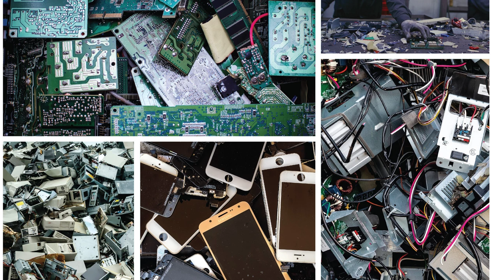

Económico
Impacto económico
El impacto económico de los residuos electrónicos es uno de los aspectos más significativos del problema, aunque a menudo es subestimado. Cada año se pierden millones de toneladas de materiales valiosos como oro, plata, cobre, aluminio y tierras raras debido al reciclaje ineficiente o a la eliminación inapropiada en vertederos informales. Según estimaciones de organismos internacionales, la suma de estos materiales desperdiciados supera los 55.000 millones de dólares anuales, cifra que refleja no solo una enorme pérdida de recursos sino también una oportunidad desaprovechada para el desarrollo industrial.
A esta pérdida económica directa se suman los costos indirectos asociados a la contaminación generada. Las regiones donde los RAEE se queman o manipulan sin control enfrentan gastos crecientes por enfermedades respiratorias, cánceres, problemas neurológicos y otras afecciones vinculadas a metales pesados. Estos costos médicos recaen sobre sistemas de salud ya debilitados, generando presiones económicas adicionales para gobiernos y comunidades. Cuando se analiza el problema de manera global, el mal manejo de RAEE representa una carga financiera significativa tanto para países desarrollados como para aquellos en vías de desarrollo.
Modelos de negocio
Frente a este escenario, la economía circular surge como una alternativa viable y rentable. Modelos que promueven la reparación, el reacondicionamiento y el reciclaje formal de dispositivos electrónicos están demostrando ser fuentes importantes de empleo y crecimiento económico sostenible. Empresas tecnológicas y startups especializadas han comenzado a invertir en plantas de reciclaje avanzadas, capaces de recuperar metales con altos niveles de pureza y eficiencia.
Por su parte, los gobiernos están implementando políticas que incentivan a las empresas a responsabilizarse por el final de vida de sus productos. La Responsabilidad Extendida del Productor (EPR), por ejemplo, obliga a los fabricantes a financiar programas de recolección y reciclaje, creando así un sistema más justo en el que los costos no recaen únicamente en consumidores o comunidades vulnerables.
Además, el sector del reciclaje electrónico se perfila como un motor potencial de empleos verdes. La creación de infraestructura formal para el manejo de RAEE puede generar miles de puestos de trabajo seguros y mejor remunerados, en contraste con las actividades informales que predominan actualmente. Este enfoque no solo impulsa el desarrollo económico, sino que también contribuye a reducir prácticas peligrosas y a mejorar la calidad de vida de los trabajadores.